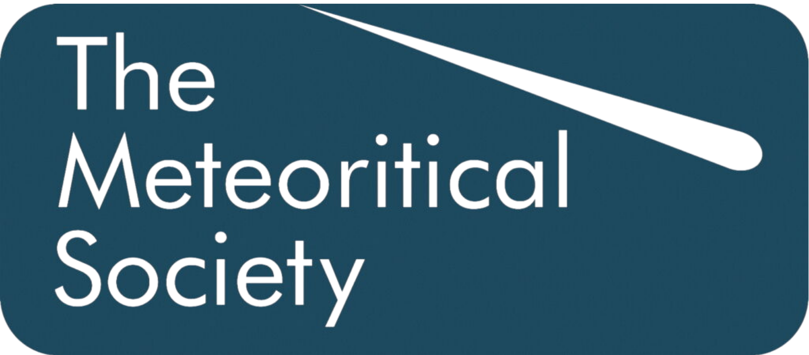
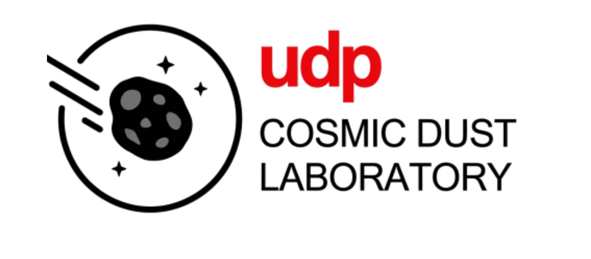
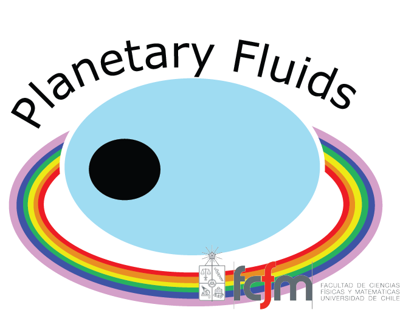

Classification and Fragmentation Analysis of Ordinary Chondrites from the Atacama Desert
C. S. Aravena González1, D. Moncada1, L. Cieza3,4, G. Batalla3,4, A. Escobar3,4, M. J. Figueroa Zambrano2, M. E. Parra1, M. Peña2, R. Lavín3, B. De la Fuente1, V. Cárcamo1, D. Castañeda1, S. Gatica1, A. Mohor1, L. Olivares1, R. Valles1
1Departamento de Geología, Universidad de Chile
2Escuela de Geología, Universidad Mayor
3Instituto de Estudios Astrofísicos, Universidad Diego Portales
4Cosmic Dust Laboratory, Universidad Diego Portales




Abstract
We present a comprehensive classification and fragmentation analysis of 49 meteorite specimens from the Atacama Desert (Catalina, El Médano, San Juan, and Los Vientos areas), recovered during the 2019 expedition and forming the Beatriz Levi Repository at the Department of Geology, Universidad de Chile. The specimens were classified using magnetic susceptibility (KLY5-A Kappabridge), infrared spectroscopy (FT-IR), Raman spectroscopy, and petrography, following the methodologies of Rochette et al. (2003, 2012), Van Schmus and Wood (1967), and Pittarello et al. (2015). Of the 49 specimens, 43 yielded magnetic susceptibility data, classified by KLY5 midpoints (Rochette et al., 2003) as 25 H-type, 17 L-type, and 1 LL-type. Including specimens classified by petrography, the collection comprises 25 H-type, 17 L-type, 4 LL-type, and 3 unclassified. Our results demonstrate that magnetic susceptibility, when combined with IR spectroscopy and petrography, provides a robust, cost-effective classification pipeline for large meteorite collections.
We present a comprehensive classification and fragmentation analysis of 49 meteorite specimens from the Atacama Desert (Catalina, El Médano, San Juan, and Los Vientos areas), recovered during the 2019 expedition and forming the Beatriz Levi Repository at the Department of Geology, Universidad de Chile. The specimens were classified using magnetic susceptibility (KLY5-A Kappabridge), infrared spectroscopy (FT-IR), Raman spectroscopy, and petrography, following the methodologies of Rochette et al. (2003, 2012), Van Schmus and Wood (1967), and Pittarello et al. (2015). Of the 49 specimens, 43 yielded magnetic susceptibility data, classified by KLY5 midpoints (Rochette et al., 2003) as 25 H-type, 17 L-type, and 1 LL-type. Including specimens classified by petrography, the collection comprises 25 H-type, 17 L-type, 4 LL-type, and 3 unclassified. Our results demonstrate that magnetic susceptibility, when combined with IR spectroscopy and petrography, provides a robust, cost-effective classification pipeline for large meteorite collections.
Figure 1. Magnetic susceptibility (log χ) vs. initial specimen mass. Click to enlarge.
Figure 2. Histogram of magnetic susceptibility (log χ) grouped by KLY5 type. Click to enlarge.
Figure 3. Weathering grade vs. magnetic susceptibility (log χ) with Rochette W correction. Click to enlarge.
Figure 4. Bulk density vs. magnetic susceptibility (log χ). Click to enlarge.
Figure 5. IR spectra overview of all magnetic clusters. Each lane shows a sample spectrum, colored by cluster membership, ordered by cluster number. Click to enlarge.